A SECURE, AFFORDABLE AND ROBUST EMR
AVAILABLE MODULES
- Reception - Patient Registration and biodata
- OTC - Over the counter sales
- Doctor - Patient clerkship and Management
- Dental - Dental Unit
- Register - General Visit Register and statistics
- IPD - Patient admissions
- OPD - General outpatient and Progressive Treatment
- Cashier - Payments, Billing, Expenses and Financial Statements
- Laboratory - Lab Reports, report templates and lab analytics
- Radiology - Manage U/S scan, X-ray or CT reports
- Antenatal - Antenatal care module with standard MOH form and analytics for HMIS 105
- Maternity - Maternity, Delivery Notes and PNC
- Pharmacy - Dispensing Logs, Stock Card and Expiry Alerts
- Theatre - Operation/procedure notes, theatre list
- Admin - Comprehensive statistics from every department, admin controls and monitoring
- User Accounts - Eclinic User Registration and permission assignment
- Inventory - Inventory Management for all billable stock
- General Inventory - Equipment Inventory for machines, lab Equipment, Beds etc
- HMIS - HMIS 105
- Referrals - Referral register
- Appointments - Facility Appointments calendar
CONTACT FOR QUOTATION
Dr. Abiira Nathan
Mobile: +0700198736
Email: nabiira2by2@gmail.com
Patient Flow
- Reception -> Registration -> Create New Visit (Assign doctor & Consultation, Choose appropriate payment type). For ANC, Maternity, Dental, an appropriate department is selected.
- Client goes to cashier to pay Consultation Fee (if applicable)
- Client then proceeds to the Consultation Room to see a doctor.
- Doctor clerks the patient, makes lab(radiology) requests. The system sends realtime notifications to Lab. The patient then goes for investigations (if required)
-
In the Lab or Radiology, the correct template for each test is
set(if not already set), sample captured and report processed.
Eclinic provides special templates for most common
tests like
Urinalysis, CBC - 3 Part machine,CBC - 5 Part machine,Lipid profile, LFTs, RFTs, Basic Metabolic Panel e.t.c - When the report is saved, Eclinic Sends a notification to the doctor and the Consultation can resume.
- If the doctor prescribes and medicine, Eclinic sends a notification to Pharmacy. The patient must first pay for the prescribed medicine at cashier before drugs can be given unless the specific facility has a different protocol.
- When all payment is complete and drugs have been given, the patient's current visit can be Dequeued and allowed home.
RECEPTION
Names and phone numbers have been randomized
Quick Patient Search
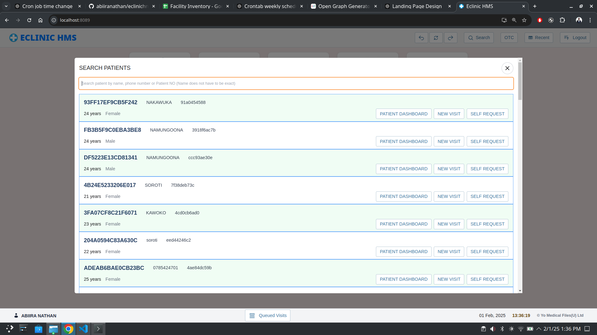TRIAGE
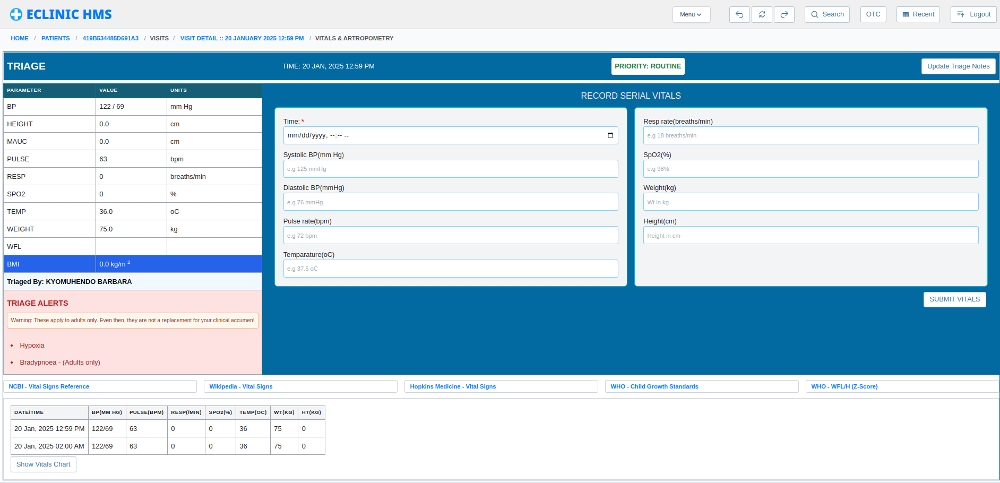 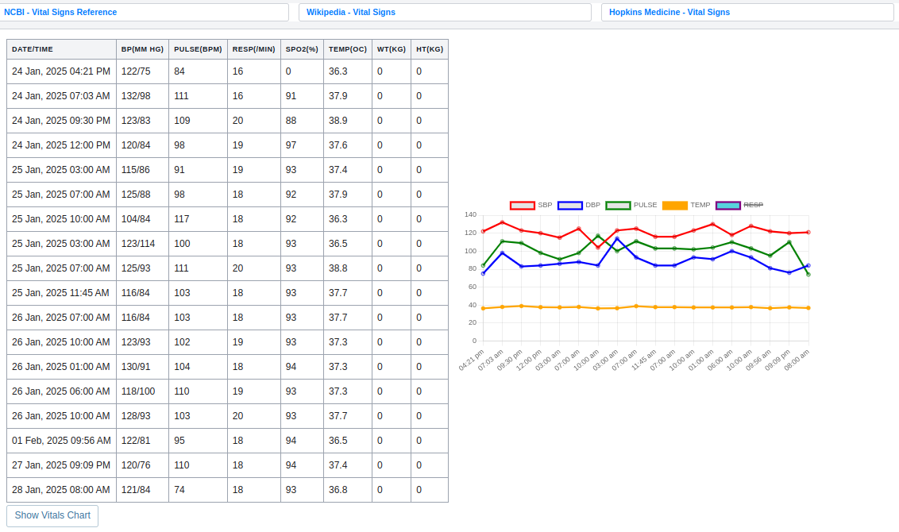CLERKSHIP
ICD-10 DIAGNOSIS AND OPD Review
BILLING PAGE
All requests, prescriptions and usables are added in one place
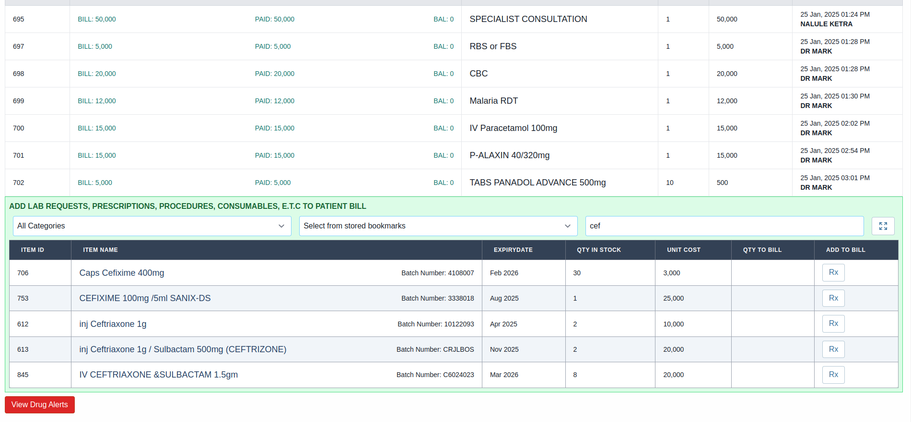During billing, you can create special packages to simplify future billing and prescriptions. This eliminates the tedious repetition.
ADMIN DASHBOARD
All statistics about your business in one convenient place.

 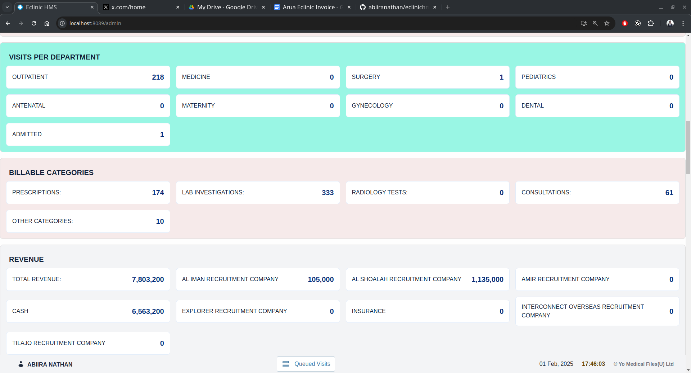
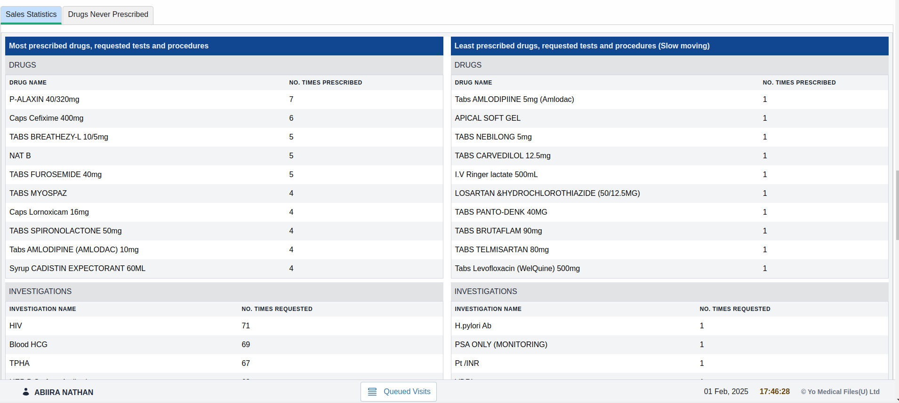
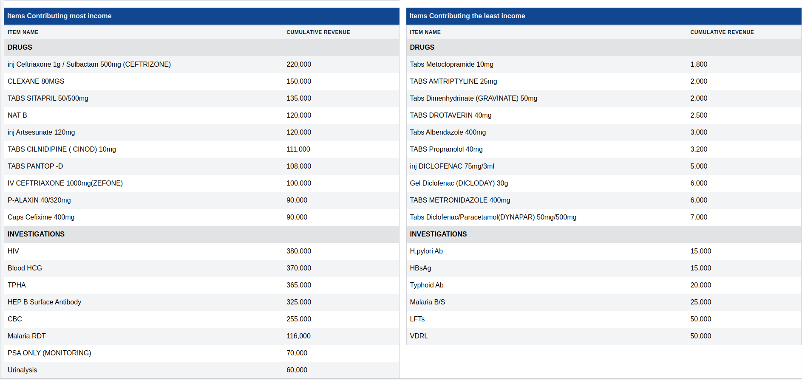
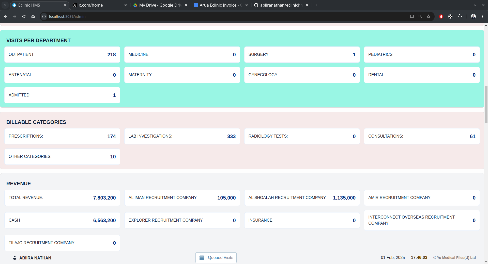
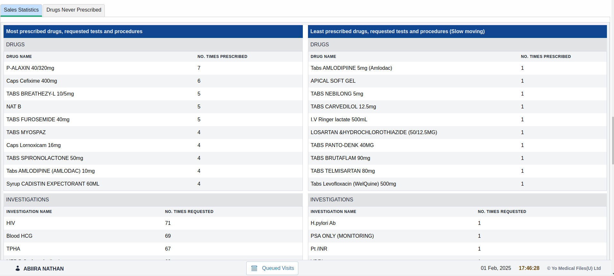
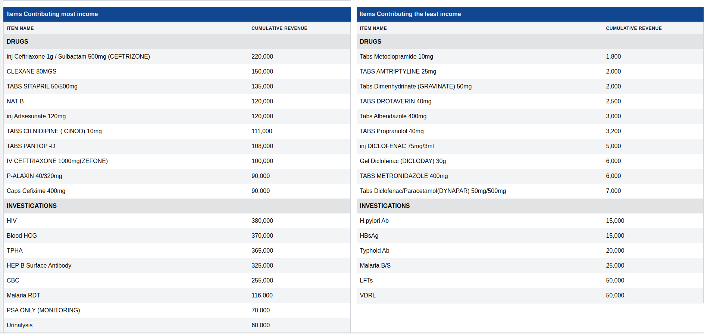
CASHIER
Cashier patient Queue
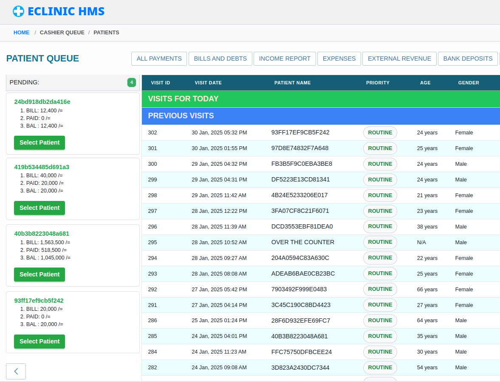 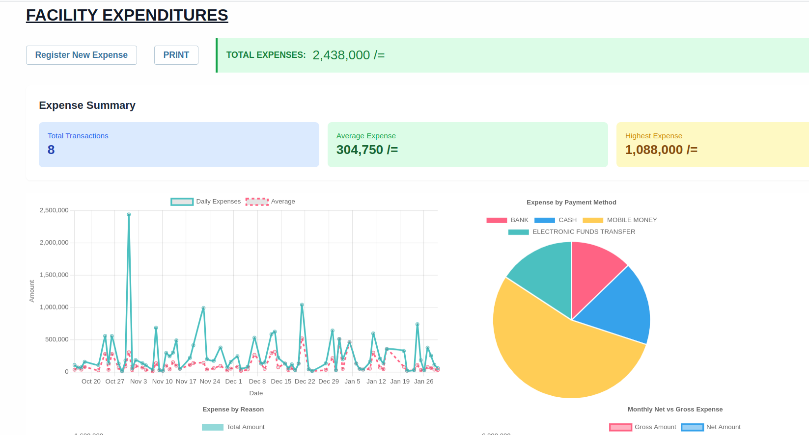INVENTORY
Comprehensive inventory management
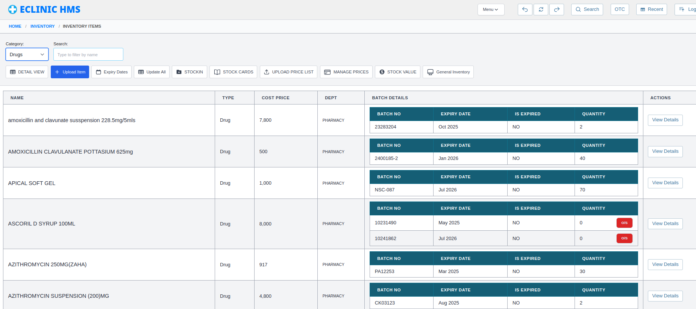